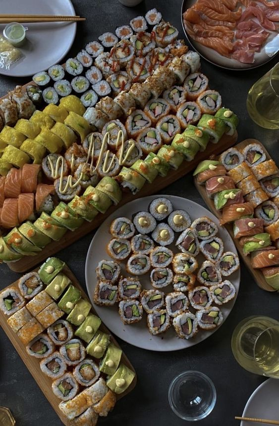

Lana Del Rey, nascida Elizabeth Woolridge Grant em 21 de junho de 1985, em Nova York, é uma cantora, compositora e produtora americana. Ela ganhou notoriedade em 2011 com seu single "Video Games", que se tornou viral e destacou seu estilo melancólico e cinematográfico. Seu álbum de estreia, *Born to Die* (2012), consolidou seu sucesso e a posicionou como uma das artistas mais influentes da música pop alternativa. Suas letras frequentemente exploram temas como amor, tragédia, glamour e nostalgia, e sua estética visual e sonora é marcada por uma mistura de referências ao passado com uma sensibilidade moderna. Ao longo de sua carreira, Lana Del Rey lançou vários álbuns aclamados pela crítica, incluindo *Ultraviolence* (2014) e *Norman Fucking Rockwell!* (2019).
Frank Ocean
Frank Ocean, nascido Christopher Edwin Breaux em 28 de outubro de 1987, em Long Beach, Califórnia, é um cantor, compositor, e produtor musical americano. Ocean começou sua carreira escrevendo músicas para outros artistas antes de ganhar destaque com sua mixtape *Nostalgia, Ultra* (2011), que recebeu elogios da crítica por sua abordagem inovadora ao R&B. Seu álbum de estreia, *Channel Orange* (2012), foi amplamente aclamado e ganhou o Grammy de Melhor Álbum Urbano Contemporâneo. Frank Ocean é conhecido por suas letras introspectivas e poéticas, que abordam temas como identidade, amor e espiritualidade, além de sua habilidade em misturar gêneros musicais. Seu segundo álbum, *Blonde* (2016), consolidou seu status como um dos artistas mais inovadores e influentes de sua geração.
Serginho
Sérgio Dutra dos Santos, conhecido como Serginho ou Escadinha, nasceu em 15 de outubro de 1975, em Diamante do Norte, Paraná. Ele é considerado um dos maiores jogadores de voleibol da história, especialmente na posição de líbero, posição que ele ajudou a popularizar e redefinir.
Serginho começou sua carreira em clubes no Brasil e rapidamente se destacou por sua incrível habilidade defensiva, reflexos rápidos e espírito competitivo. Sua primeira grande conquista com a seleção brasileira veio nos Jogos Olímpicos de Atenas, em 2004, onde o Brasil conquistou a medalha de ouro. Ele também foi fundamental na conquista da medalha de prata nos Jogos Olímpicos de Pequim, em 2008, e no retorno ao ouro nos Jogos Olímpicos do Rio, em 2016, em sua última aparição olímpica.
Além dos sucessos olímpicos, Serginho acumulou títulos em várias competições internacionais, como o Campeonato Mundial, a Liga Mundial, e a Copa do Mundo. Ele foi eleito o melhor líbero em várias dessas competições, destacando-se por sua liderança e capacidade de elevar o nível de jogo da equipe.
Após sua aposentadoria da seleção em 2016, Serginho continuou a jogar por clubes brasileiros até 2020, quando anunciou sua aposentadoria definitiva das quadras. Ele é amplamente respeitado não apenas por suas habilidades técnicas, mas também por sua ética de trabalho, humildade e contribuição ao voleibol brasileiro.
Blair e Chuck
Blair Waldorf e Chuck Bass são dois dos personagens mais icônicos da série *Gossip Girl*, que foi ao ar de 2007 a 2012. Interpretados por Leighton Meester e Ed Westwick, respectivamente, Blair e Chuck são conhecidos por seu relacionamento complexo, cheio de altos e baixos, e pela química intensa entre os personagens.
Blair Waldorf
Blair Waldorf é a "Queen Bee" do Upper East Side de Nova York, conhecida por sua inteligência, estilo impecável e personalidade controladora. Ela é filha de uma designer de moda de sucesso e vive em um mundo de luxo e privilégio. Blair é extremamente ambiciosa e sonha em ter uma vida perfeita, muitas vezes se esforçando para manter sua imagem de perfeição. Ao longo da série, ela enfrenta desafios em seus relacionamentos, especialmente com seu namorado de longa data, Nate Archibald, e sua melhor amiga, Serena van der Woodsen. No entanto, é seu relacionamento com Chuck Bass que se torna o foco central de seu arco na série.
Chuck Bass
Chuck Bass é o "bad boy" do Upper East Side, herdeiro de uma vasta fortuna e filho de Bart Bass, um poderoso magnata. Chuck é inicialmente retratado como hedonista e manipulador, mas ao longo da série, sua personagem desenvolve camadas mais profundas, mostrando sua vulnerabilidade, especialmente em relação a Blair. Ele é frequentemente associado a decisões imprudentes e atitudes desafiadoras, mas sua evolução como personagem é marcada por sua luta interna entre sua natureza sombria e seu desejo de ser amado.
O Relacionamento Blair e Chuck
O relacionamento entre Blair e Chuck é um dos pilares da série *Gossip Girl*. Eles começam como amigos com benefícios, mas logo desenvolvem sentimentos profundos um pelo outro. O romance deles é tumultuado, marcado por manipulações, segredos e jogos de poder. Apesar de todas as dificuldades, eles compartilham uma conexão intensa e uma compreensão mútua que os outros personagens não conseguem alcançar. Sua relação é um verdadeiro "jogo de xadrez" emocional, onde ambos tentam controlar e desafiar o outro, mas também mostram um amor incondicional.
O relacionamento deles culmina no final da série, onde finalmente se casam, solidificando seu status como um dos casais mais memoráveis da televisão. Blair e Chuck são frequentemente lembrados por sua complexidade, intensidade e pela maneira como seus personagens evoluem juntos ao longo da série.
Comida japonesa

A comida japonesa é famosa em todo o mundo por sua estética refinada, sabores sutis e a valorização dos ingredientes frescos e de alta qualidade. A culinária japonesa é profundamente enraizada em tradições culturais e possui uma vasta diversidade de pratos, variando de receitas simples e caseiras a criações elaboradas que são verdadeiras obras de arte.
Elementos Principais
A culinária japonesa é conhecida por utilizar ingredientes frescos e sazonais, com um foco particular em frutos do mar, arroz, legumes, e soja. Alguns dos ingredientes básicos incluem:
- **Arroz (Gohan):** Um alimento básico na dieta japonesa, servido em quase todas as refeições.
- **Peixe e frutos do mar:** Consumidos crus, como no sushi e sashimi, ou cozidos em caldos, fritos (tempura), ou grelhados.
- **Soja:** Usada em diversas formas, incluindo tofu, molho de soja (shoyu), e natto (soja fermentada).
- **Alga (Nori, Kombu, Wakame):** Utilizada em sopas, saladas, e como envoltório para sushi.
Pratos Icônicos
- **Sushi:** Talvez o prato japonês mais conhecido no ocidente, o sushi é uma combinação de arroz temperado com vinagre (shari) e uma variedade de ingredientes, incluindo peixe cru, frutos do mar, legumes, e ocasionalmente frutas tropicais. Ele pode ser servido em diferentes formas, como nigiri (bolinho de arroz com uma fatia de peixe por cima), maki (rolinho envolto em alga), e temaki (cone de alga recheado).
- **Sashimi:** Fatias finas de peixe cru ou frutos do mar, servidas com molho de soja, wasabi e gengibre. O foco aqui é na pureza e frescor do ingrediente principal.
- **Tempura:** Legumes, frutos do mar, ou até mesmo carne, empanados e fritos em óleo quente, resultando em uma textura crocante por fora e suculenta por dentro.
- **Ramen:** Um prato de macarrão em caldo, geralmente feito de carne ou peixe, com uma variedade de acompanhamentos como ovo cozido, algas, vegetais, e carne de porco. O ramen tem muitas variações regionais, cada uma com seu estilo único de caldo e ingredientes.
- **Yakitori:** Espetinhos de frango grelhados, muitas vezes temperados com sal ou uma variedade de molhos à base de shoyu. É comum encontrar yakitori em izakayas (bares japoneses) e festivais.
- **Miso Soup:** Uma sopa feita a partir de pasta de miso (fermentado de soja) misturada com caldo dashi, e geralmente inclui tofu, algas e cebolinha. É um acompanhamento comum em muitas refeições japonesas.
Cultura e Filosofia
A culinária japonesa é muito mais do que apenas comida; ela está profundamente ligada à cultura e filosofia japonesa. Princípios como **washoku**, que significa "harmonia da comida", enfatizam o equilíbrio de sabores e a beleza visual dos pratos. A apresentação dos alimentos é tão importante quanto o sabor, com a comida muitas vezes arranjada de maneira a refletir a natureza e a estação do ano.
Além disso, a culinária japonesa valoriza o conceito de **umami**, conhecido como o quinto sabor (além do doce, salgado, azedo e amargo), que é encontrado naturalmente em ingredientes como algas marinhas, cogumelos, e molho de soja.
Influência Global
A comida japonesa se tornou popular em todo o mundo, com restaurantes japoneses presentes em praticamente todas as grandes cidades. Pratos como sushi e ramen foram adaptados e reinventados em várias culturas, mantendo o espírito da culinária japonesa enquanto se misturam com sabores locais.